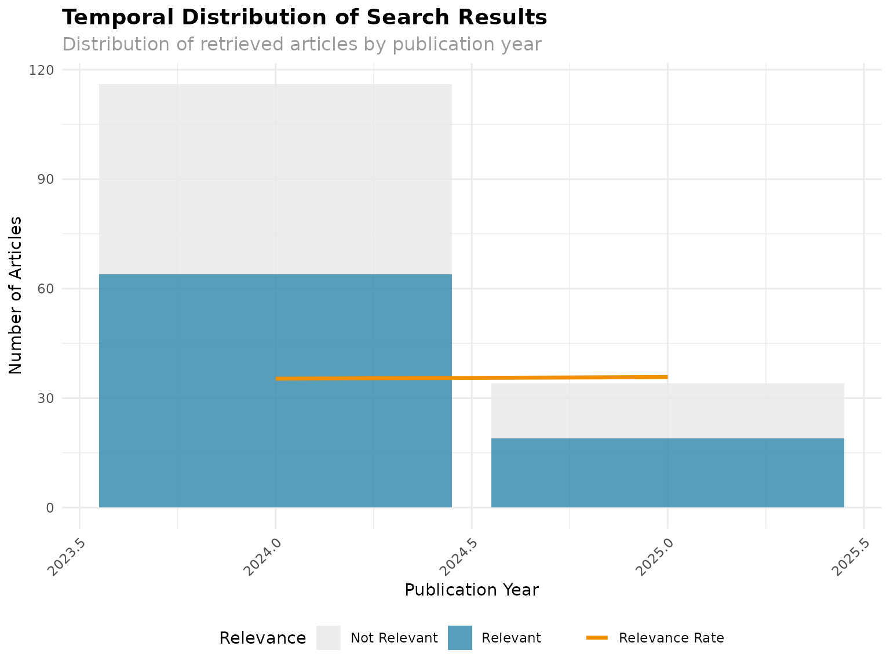
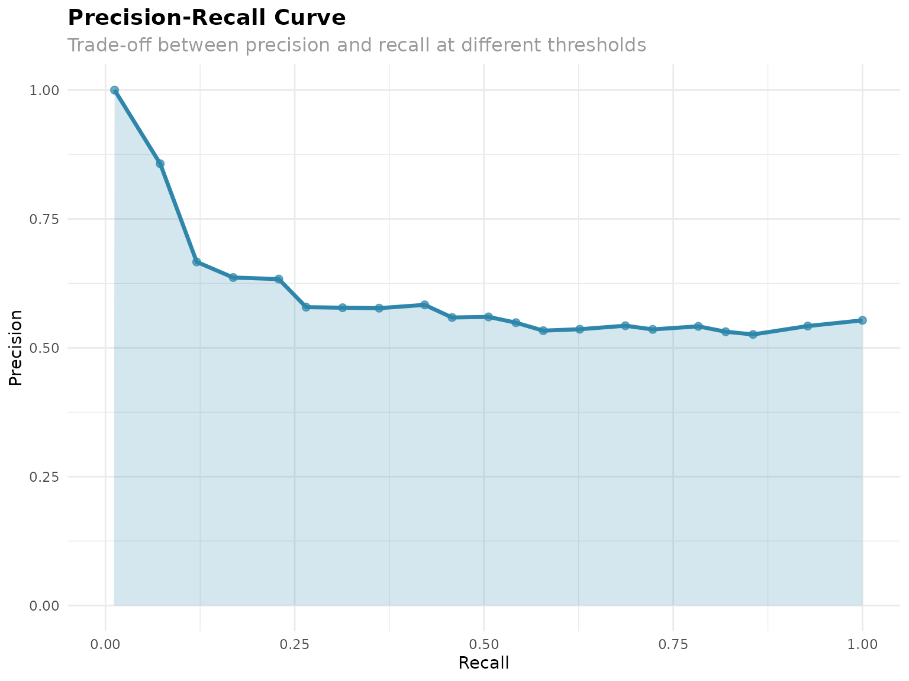

Real PubMed Search Analysis with searchAnalyzeR
A Comprehensive Example Using COVID-19 Long-term Effects
searchAnalyzeR Development Team
2025-11-03
Source:vignettes/Real_PubMed_Search_Analysis_with_searchAnalyzeR.Rmd
Real_PubMed_Search_Analysis_with_searchAnalyzeR.RmdIntroduction
This vignette demonstrates how to use the searchAnalyzeR
package to conduct a comprehensive analysis of systematic review search
strategies using real PubMed data. We’ll walk through a complete
workflow for analyzing search performance, from executing searches to
generating publication-ready reports.
The searchAnalyzeR package provides tools for:
- Search execution and standardization across multiple databases
- Duplicate detection and removal using sophisticated algorithms
- Performance metric calculation including precision, recall, and F1 scores
- Visualization generation for search strategy assessment
- Export capabilities in multiple formats (CSV, Excel, RIS)
- PRISMA diagram creation for systematic review reporting
- Term effectiveness analysis to optimize search strategies
Case Study: COVID-19 Long-term Effects
For this demonstration, we’ll analyze a search strategy designed to identify literature on the long-term effects of COVID-19, commonly known as “Long COVID.” This topic represents a rapidly evolving area of research that presents typical challenges faced in systematic reviews.
Getting Started
Required Packages
First, let’s load the required packages for our analysis:
# Load required packages
library(searchAnalyzeR)
library(rentrez) # For PubMed API access
library(xml2) # For XML parsing
library(dplyr)
library(ggplot2)
library(lubridate)
cat("=== searchAnalyzeR: Real PubMed Search Example ===\n")
#> === searchAnalyzeR: Real PubMed Search Example ===
cat("Topic: Long-term effects of COVID-19 (Long COVID)\n")
#> Topic: Long-term effects of COVID-19 (Long COVID)
cat("Objective: Demonstrate search strategy analysis with real data\n\n")
#> Objective: Demonstrate search strategy analysis with real dataDefining the Search Strategy
A well-defined search strategy is crucial for systematic reviews. Here we define our search parameters including terms, databases, date ranges, and filters:
# Define our search strategy
search_strategy <- list(
terms = c(
"long covid",
"post-covid syndrome",
"covid-19 sequelae",
"post-acute covid-19",
"persistent covid symptoms"
),
databases = c("PubMed"),
date_range = as.Date(c("2020-01-01", "2024-12-31")),
filters = list(
language = "English",
article_types = c("Journal Article", "Review", "Clinical Trial")
),
search_date = Sys.time()
)
cat("Search Strategy:\n")
#> Search Strategy:
cat("Terms:", paste(search_strategy$terms, collapse = " OR "), "\n")
#> Terms: long covid OR post-covid syndrome OR covid-19 sequelae OR post-acute covid-19 OR persistent covid symptoms
cat("Date range:", paste(search_strategy$date_range, collapse = " to "), "\n\n")
#> Date range: 2020-01-01 to 2024-12-31The search strategy includes:
- Search terms: A comprehensive list of synonyms and related terms for Long COVID
- Date range: Covering the period from the start of the pandemic through 2024
- Language filter: English language publications only
- Article types: Focusing on primary research, reviews, and clinical trials
Executing the Search
PubMed Search
The searchAnalyzeR package provides convenient functions
to search PubMed and retrieve article metadata:
# Execute the search using the package function
cat("Searching PubMed for real articles...\n")
#> Searching PubMed for real articles...
raw_results <- search_pubmed(
search_terms = search_strategy$terms,
max_results = 150,
date_range = search_strategy$date_range,
language = "English"
)
#> PubMed Query: ( "long covid"[Title/Abstract] OR "post-covid syndrome"[Title/Abstract] OR "covid-19 sequelae"[Title/Abstract] OR "post-acute covid-19"[Title/Abstract] OR "persistent covid symptoms"[Title/Abstract] ) AND ("2020/01/01"[Date - Publication] : "2024/12/31"[Date - Publication]) AND English [Language]
#> Found 150 articles
#> Retrieving batch 1 of 3
#> Retrieving batch 2 of 3
#> Retrieving batch 3 of 3
cat("\nRaw search completed. Retrieved", nrow(raw_results), "articles.\n")
#>
#> Raw search completed. Retrieved 150 articles.Data Standardization
Raw search results from different databases often have varying
formats. The std_search_results() function standardizes the
data structure:
# Standardize the results using searchAnalyzeR functions
cat("\nStandardizing search results...\n")
#>
#> Standardizing search results...
standardized_results <- std_search_results(raw_results, source_format = "pubmed")This standardization ensures that:
- Field names are consistent across different data sources
- Date formats are properly parsed
- Missing values are handled appropriately
- Data types are correctly assigned
Data Quality Assessment
Duplicate Detection
Duplicate detection is critical in systematic reviews, especially when searching multiple databases. The package provides sophisticated algorithms for identifying duplicates:
# Detect and remove duplicates
cat("Detecting duplicates...\n")
#> Detecting duplicates...
dedup_results <- detect_dupes(standardized_results, method = "exact")
cat("Duplicate detection complete:\n")
#> Duplicate detection complete:
cat("- Total articles:", nrow(dedup_results), "\n")
#> - Total articles: 150
cat("- Unique articles:", sum(!dedup_results$duplicate), "\n")
#> - Unique articles: 150
cat("- Duplicates found:", sum(dedup_results$duplicate), "\n\n")
#> - Duplicates found: 0The detect_dupes() function offers several methods:
- exact: Matches identical titles and authors
- fuzzy: Uses string similarity algorithms
- doi: Matches based on Digital Object Identifiers
- combined: Uses multiple criteria for robust detection
Search Statistics
Basic statistics help assess the overall quality of the search results:
# Calculate search statistics
search_stats <- calc_search_stats(dedup_results)
cat("Search Statistics:\n")
#> Search Statistics:
cat("- Date range:", paste(search_stats$date_range, collapse = " to "), "\n")
#> - Date range: 2024-01-01 to 2025-05-01
cat("- Missing abstracts:", search_stats$missing_abstracts, "\n")
#> - Missing abstracts: 0
cat("- Missing dates:", search_stats$missing_dates, "\n\n")
#> - Missing dates: 0Creating a Gold Standard
Demonstration Gold Standard
For performance evaluation, we need a “gold standard” of known relevant articles. In a real systematic review, this would be your manually identified relevant articles. For this demonstration, we create a simplified gold standard:
# Create a gold standard for demonstration
# In a real systematic review, this would be your known relevant articles
# For this example, we'll identify articles that contain key terms in titles
cat("Creating demonstration gold standard...\n")
#> Creating demonstration gold standard...
long_covid_terms <- c("long covid", "post-covid", "post-acute covid", "persistent covid", "covid sequelae")
pattern <- paste(long_covid_terms, collapse = "|")
gold_standard_ids <- dedup_results %>%
filter(!duplicate) %>%
filter(grepl(pattern, tolower(title))) %>%
pull(id)
cat("Gold standard created with", length(gold_standard_ids), "highly relevant articles\n\n")
#> Gold standard created with 83 highly relevant articlesNote: In practice, your gold standard would be created through:
- Expert knowledge of key articles in the field
- Pilot searches and manual review
- Previously published systematic reviews
- Consultation with domain experts
Performance Analysis
Initializing the SearchAnalyzer
The SearchAnalyzer class provides comprehensive tools
for evaluating search performance:
# Initialize SearchAnalyzer with real data
cat("Initializing SearchAnalyzer...\n")
#> Initializing SearchAnalyzer...
analyzer <- SearchAnalyzer$new(
search_results = filter(dedup_results, !duplicate),
gold_standard = gold_standard_ids,
search_strategy = search_strategy
)Calculating Performance Metrics
The analyzer calculates a comprehensive set of performance metrics:
# Calculate comprehensive metrics
cat("Calculating performance metrics...\n")
#> Calculating performance metrics...
metrics <- analyzer$calculate_metrics()
# Display key metrics
cat("\n=== SEARCH PERFORMANCE METRICS ===\n")
#>
#> === SEARCH PERFORMANCE METRICS ===
if (!is.null(metrics$precision_recall$precision)) {
cat("Precision:", round(metrics$precision_recall$precision, 3), "\n")
cat("Recall:", round(metrics$precision_recall$recall, 3), "\n")
cat("F1 Score:", round(metrics$precision_recall$f1_score, 3), "\n")
cat("Number Needed to Read:", round(metrics$precision_recall$number_needed_to_read, 1), "\n")
}
#> Precision: 0.553
#> Recall: 1
#> F1 Score: 0.712
#> Number Needed to Read: 1.8
cat("\n=== BASIC METRICS ===\n")
#>
#> === BASIC METRICS ===
cat("Total Records:", metrics$basic$total_records, "\n")
#> Total Records: 150
cat("Unique Records:", metrics$basic$unique_records, "\n")
#> Unique Records: 150
cat("Duplicates:", metrics$basic$duplicates, "\n")
#> Duplicates: 0
cat("Sources:", metrics$basic$sources, "\n")
#> Sources: 98Visualization and Reporting
Performance Visualizations
The package generates publication-ready visualizations to assess search performance:
# Generate visualizations
cat("\nGenerating visualizations...\n")
#>
#> Generating visualizations...
# Overview plot
overview_plot <- analyzer$visualize_performance("overview")
print(overview_plot)
# Temporal distribution plot
temporal_plot <- analyzer$visualize_performance("temporal")
#> Warning: Using `size` aesthetic for lines was deprecated in ggplot2 3.4.0.
#> ℹ Please use `linewidth` instead.
#> ℹ The deprecated feature was likely used in the searchAnalyzeR package.
#> Please report the issue at
#> <https://github.com/chaoliu-cl/searchAnalyzeR/issues>.
#> This warning is displayed once every 8 hours.
#> Call `lifecycle::last_lifecycle_warnings()` to see where this warning was
#> generated.
print(temporal_plot)
# Precision-recall curve (if gold standard available)
if (length(gold_standard_ids) > 0) {
pr_plot <- analyzer$visualize_performance("precision_recall")
print(pr_plot)
}
PRISMA Flow Diagram
The package can generate data for PRISMA flow diagrams, essential for systematic review reporting:
# Generate PRISMA flow diagram data
cat("\nCreating PRISMA flow data...\n")
#>
#> Creating PRISMA flow data...
screening_data <- data.frame(
id = dedup_results$id[!dedup_results$duplicate],
identified = TRUE,
duplicate = FALSE,
title_abstract_screened = TRUE,
full_text_eligible = runif(sum(!dedup_results$duplicate)) > 0.7, # Simulate screening
included = runif(sum(!dedup_results$duplicate)) > 0.85, # Simulate final inclusion
excluded_title_abstract = runif(sum(!dedup_results$duplicate)) > 0.3,
excluded_full_text = runif(sum(!dedup_results$duplicate)) > 0.15
)
# Generate PRISMA diagram
reporter <- PRISMAReporter$new()
prisma_plot <- reporter$generate_prisma_diagram(screening_data)
print(prisma_plot)Data Export and Sharing
Multiple Export Formats
The package supports exporting results in various formats commonly used in systematic reviews:
# Export results in multiple formats
cat("\nExporting results...\n")
#>
#> Exporting results...
output_dir <- tempdir()
export_files <- export_results(
search_results = filter(dedup_results, !duplicate),
file_path = file.path(output_dir, "covid_long_term_search"),
formats = c("csv", "xlsx", "ris"),
include_metadata = TRUE
)
cat("Files exported:\n")
#> Files exported:
for (file in export_files) {
cat("-", file, "\n")
}
#> - /tmp/RtmpvBR40M/covid_long_term_search.csv
#> - /tmp/RtmpvBR40M/covid_long_term_search.xlsx
#> - /tmp/RtmpvBR40M/covid_long_term_search.risMetrics Export
Performance metrics can also be exported for further analysis or reporting:
# Export metrics
metrics_file <- export_metrics(
metrics = metrics,
file_path = file.path(output_dir, "search_metrics.xlsx"),
format = "xlsx"
)
cat("- Metrics exported to:", metrics_file, "\n")
#> - Metrics exported to: /tmp/RtmpvBR40M/search_metrics.xlsxComprehensive Data Package
For reproducibility, create a complete data package containing all analysis components:
# Create a complete data package
cat("\nCreating comprehensive data package...\n")
#>
#> Creating comprehensive data package...
package_dir <- create_data_package(
search_results = filter(dedup_results, !duplicate),
analysis_results = list(
metrics = metrics,
search_strategy = search_strategy,
screening_data = screening_data
),
output_dir = output_dir,
package_name = "covid_long_term_systematic_review"
)
cat("Data package created at:", package_dir, "\n")
#> Data package created at: /tmp/RtmpvBR40M/covid_long_term_systematic_reviewAdvanced Analysis
Benchmark Validation
The package includes tools for validating search strategies against established benchmarks:
# Demonstrate benchmark validation (simplified)
cat("\nDemonstrating benchmark validation...\n")
#>
#> Demonstrating benchmark validation...
validator <- BenchmarkValidator$new()
# Add our search as a custom benchmark
validator$add_benchmark(
name = "covid_long_term",
corpus = filter(dedup_results, !duplicate),
relevant_ids = gold_standard_ids
)
# Validate the strategy
validation_results <- validator$validate_strategy(
search_strategy = search_strategy,
benchmark_name = "covid_long_term"
)
cat("Validation Results:\n")
#> Validation Results:
cat("- Precision:", round(validation_results$precision, 3), "\n")
#> - Precision: 0.696
cat("- Recall:", round(validation_results$recall, 3), "\n")
#> - Recall: 0.855
cat("- F1 Score:", round(validation_results$f1_score, 3), "\n")
#> - F1 Score: 0.768Text Similarity Analysis
Analyze how well the retrieved abstracts match the search terms:
# Text similarity analysis on abstracts
cat("\nAnalyzing abstract similarity to search terms...\n")
#>
#> Analyzing abstract similarity to search terms...
search_term_text <- paste(search_strategy$terms, collapse = " ")
similarity_scores <- sapply(dedup_results$abstract[!dedup_results$duplicate], function(abstract) {
if (is.na(abstract) || abstract == "") return(0)
calc_text_sim(search_term_text, abstract, method = "jaccard")
})
cat("Average abstract similarity to search terms:", round(mean(similarity_scores, na.rm = TRUE), 3), "\n")
#> Average abstract similarity to search terms: 0.013
cat("Abstracts with high similarity (>0.1):", sum(similarity_scores > 0.1, na.rm = TRUE), "\n")
#> Abstracts with high similarity (>0.1): 0Term Effectiveness Analysis
Evaluate which search terms are most effective:
# Analyze term effectiveness
cat("\nAnalyzing individual term effectiveness...\n")
#>
#> Analyzing individual term effectiveness...
term_analysis <- term_effectiveness(
terms = search_strategy$terms,
search_results = filter(dedup_results, !duplicate),
gold_standard = gold_standard_ids
)
print(term_analysis)
#> Term Effectiveness Analysis
#> ==========================
#> Search Results: 150 articles
#> Gold Standard: 83 relevant articles
#> Fields Analyzed: title, abstract
#>
#> term articles_with_term relevant_with_term precision
#> long covid 86 60 0.698
#> post-covid syndrome 5 5 1.000
#> covid-19 sequelae 5 1 0.200
#> post-acute covid-19 15 11 0.733
#> persistent covid symptoms 0 0 0.000
#> coverage
#> 0.723
#> 0.060
#> 0.012
#> 0.133
#> 0.000
# Calculate term effectiveness scores
term_scores <- calc_tes(term_analysis)
cat("\nTerm Effectiveness Scores (TES):\n")
#>
#> Term Effectiveness Scores (TES):
print(term_scores[order(term_scores$tes, decreasing = TRUE), ])
#> Term Effectiveness Analysis
#> ==========================
#> Search Results: 150 articles
#> Gold Standard: 83 relevant articles
#> Fields Analyzed: title, abstract
#>
#> term articles_with_term relevant_with_term precision
#> long covid 86 60 0.698
#> post-acute covid-19 15 11 0.733
#> post-covid syndrome 5 5 1.000
#> covid-19 sequelae 5 1 0.200
#> persistent covid symptoms 0 0 0.000
#> coverage tes
#> 0.723 0.71005917
#> 0.133 0.22448980
#> 0.060 0.11363636
#> 0.012 0.02272727
#> 0.000 0.00000000
# Find top performing terms
top_terms <- find_top_terms(term_analysis, n = 3, plot = TRUE, plot_type = "precision_coverage")
cat("\nTop 3 performing terms:", paste(top_terms$terms, collapse = ", "), "\n")
#>
#> Top 3 performing terms: long covid, post-acute covid-19, post-covid syndrome
if (!is.null(top_terms$plot)) {
print(top_terms$plot)
}Results Interpretation and Recommendations
Automated Recommendations
Based on the calculated metrics, the package can provide automated recommendations:
# Final summary and recommendations
cat("\n=== FINAL SUMMARY AND RECOMMENDATIONS ===\n")
#>
#> === FINAL SUMMARY AND RECOMMENDATIONS ===
cat("Search Topic: Long-term effects of COVID-19\n")
#> Search Topic: Long-term effects of COVID-19
cat("Articles Retrieved:", sum(!dedup_results$duplicate), "\n")
#> Articles Retrieved: 150
cat("Search Date Range:", paste(search_strategy$date_range, collapse = " to "), "\n")
#> Search Date Range: 2020-01-01 to 2024-12-31
if (!is.null(metrics$precision_recall$precision)) {
cat("Search Precision:", round(metrics$precision_recall$precision, 3), "\n")
if (metrics$precision_recall$precision < 0.1) {
cat("RECOMMENDATION: Low precision suggests search may be too broad. Consider:\n")
cat("- Adding more specific terms\n")
cat("- Using MeSH terms\n")
cat("- Adding study type filters\n")
} else if (metrics$precision_recall$precision > 0.5) {
cat("RECOMMENDATION: High precision suggests good specificity. Consider:\n")
cat("- Broadening search if recall needs improvement\n")
cat("- Adding synonyms or related terms\n")
}
}
#> Search Precision: 0.553
#> RECOMMENDATION: High precision suggests good specificity. Consider:
#> - Broadening search if recall needs improvement
#> - Adding synonyms or related termsSample Retrieved Articles
Let’s examine some of the retrieved articles to understand the search results:
# Show some example retrieved articles
cat("\n=== SAMPLE RETRIEVED ARTICLES ===\n")
#>
#> === SAMPLE RETRIEVED ARTICLES ===
sample_articles <- filter(dedup_results, !duplicate) %>%
arrange(desc(date)) %>%
head(3)
for (i in 1:nrow(sample_articles)) {
article <- sample_articles[i, ]
cat("\n", i, ". ", article$title, "\n", sep = "")
cat(" Journal:", article$source, "\n")
cat(" Date:", as.character(article$date), "\n")
cat(" PMID:", gsub("PMID:", "", article$id), "\n")
cat(" Abstract:", substr(article$abstract, 1, 200), "...\n")
}
#>
#> 1. Rates, Risk Factors and Outcomes of Complications After COVID-19 in Children.
#> Journal: PubMed: The Pediatric infectious disease journal
#> Date: 2025-05-01
#> PMID: 40232883
#> Abstract: Coronavirus disease 2019 (COVID-19) can lead to various complications, including multisystem inflammatory syndrome in children (MIS-C) and post-COVID-19 conditions (long COVID). This study aimed to de ...
#>
#> 2. Considerations for Long COVID Rehabilitation in Women.
#> Journal: PubMed: Physical medicine and rehabilitation clinics of North America
#> Date: 2025-05-01
#> PMID: 40210368
#> Abstract: The coronavirus disease 2019 (COVID-19) pandemic has given rise to long COVID, a prolonged manifestation of severe acute respiratory syndrome coronavirus 2 infection, which presents with varied sympto ...
#>
#> 3. Self-Assembly of Human Fibrinogen into Microclot-Mimicking Antifibrinolytic Amyloid Fibrinogen Particles.
#> Journal: PubMed: ACS applied bio materials
#> Date: 2025-01-20
#> PMID: 39723824
#> Abstract: Recent clinical studies have highlighted the presence of microclots in the form of amyloid fibrinogen particles (AFPs) in plasma samples from Long COVID patients. However, the clinical significance of ...Summary and Next Steps
What We’ve Accomplished
This vignette demonstrated a complete workflow using the
searchAnalyzeR package:
cat("\n=== ANALYSIS COMPLETE ===\n")
#>
#> === ANALYSIS COMPLETE ===
cat("This example demonstrated:\n")
#> This example demonstrated:
cat("1. Real PubMed search execution using search_pubmed()\n")
#> 1. Real PubMed search execution using search_pubmed()
cat("2. Data standardization and deduplication\n")
#> 2. Data standardization and deduplication
cat("3. Performance metric calculation\n")
#> 3. Performance metric calculation
cat("4. Visualization generation\n")
#> 4. Visualization generation
cat("5. Multi-format export capabilities\n")
#> 5. Multi-format export capabilities
cat("6. PRISMA diagram creation\n")
#> 6. PRISMA diagram creation
cat("7. Benchmark validation\n")
#> 7. Benchmark validation
cat("8. Term effectiveness analysis\n")
#> 8. Term effectiveness analysis
cat("9. Comprehensive reporting\n")
#> 9. Comprehensive reporting
cat("\nAll outputs saved to:", output_dir, "\n")
#>
#> All outputs saved to: /tmp/RtmpvBR40MFiles Generated
The analysis generates numerous output files for different purposes:
# Clean up and provide final file locations
list.files(output_dir, pattern = "covid", full.names = TRUE, recursive = TRUE)
#> [1] "/tmp/RtmpvBR40M/covid_long_term_search.csv"
#> [2] "/tmp/RtmpvBR40M/covid_long_term_search.ris"
#> [3] "/tmp/RtmpvBR40M/covid_long_term_search.xlsx"Next Steps
After completing this analysis, typical next steps would include:
- Refining the search strategy based on performance metrics and term effectiveness analysis
- Expanding to multiple databases using similar workflows
- Implementing the refined strategy in your systematic review protocol
- Using the exported data for screening and data extraction phases
- Incorporating visualizations into your systematic review protocol or publication
Additional Resources
For more advanced features and customization options, consult:
- The package documentation:
help(package = "searchAnalyzeR") - Function-specific help:
?search_pubmed,?SearchAnalyzer, etc. - Additional vignettes covering specialized topics
- The package GitHub repository for updates and community contributions
This comprehensive workflow demonstrates how
searchAnalyzeR can streamline and enhance the systematic
review search process, providing objective metrics and visualizations to
support evidence-based search strategy development and optimization.